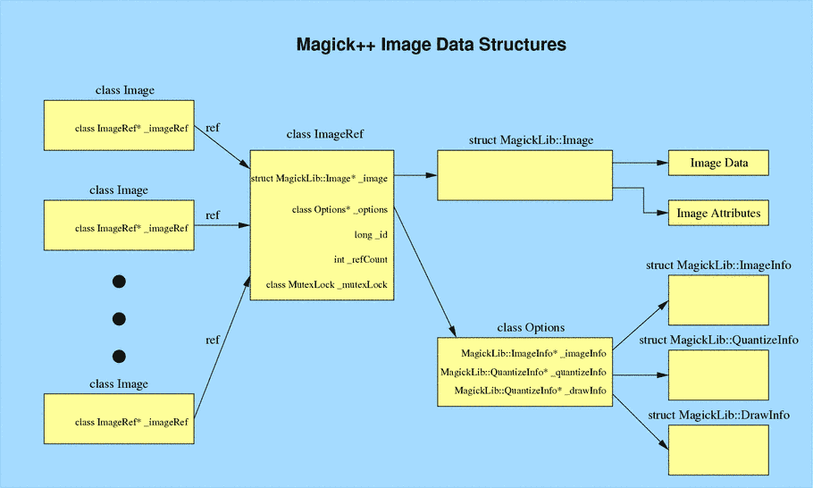

Magick::Image Data Structures
The class Magick::Image is a simple handle which points to a reference-counted image representation. This allows multiple Magick::Image instances to share the same image and attributes. At the point in time that the image data, or image attributes are modified and the current reference count is greater than one, the image data and attributes are copied to create a new image with a reference count of one and the reference count on the old image is decremented. If the reference count on the old image becomes zero, then the associated reference and data are deleted. This strategy represents a simple (but effective) form of garbage collection
